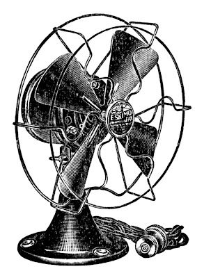

STRESS
"Le stress n'est que la soumission avouée à des contraintes non choisies." Grégoire LACROIX

Le stress est devenu un mot d’usage courant que les gens utilisent indifféremment, soit pour décrire les multiples événements et circonstances que leur impose leur quotidien, soit pour exprimer les diverses conséquences émotionnelles que de tels événements peuvent induire. Le stress est donc la résultante des interactions d’un individu avec son environnement.
C'est un phénomène universel lié à l’existence et à la poursuite de la vie sur la planète Terre ; il est d’abord source d’excitation sensorielle et motrice permettant la croissance des organismes terrestres. On peut alors comprendre le regard du père du stress, Hans Selye, liant le stress et la vie ; trop de stress nuit aux organismes terrestres, l'absence de stress = mort ! Le stress est donc non seulement utile, mais nécessaire à la survie. C'est ce qu'on appelle le stress aigu, qui correspond aux réactions de notre organisme quand nous faisons face à une menace ou un enjeu ponctuel, et qui disparaît quand la situation de stress prend fin.
Il est un concept aux limites de la métallurgie, de la psychologie, de la psychiatrie, de la neurophysiologie, de la neurochimie, de l’immunologie, de la psychosociologie, de la psychanalyse, de la psychosomatique, de la neuropsychanalyse, etc. Il vient du latin stringere qui signifie « étreindre, serrer, resserrer, lier, pincer, serrer le cœur, blesser, offenser », qui a donné naissance en français à « étreindre, entourer avec le corps, avec les membres, en serrant étroitement », accompagné de sentiments opposés puisqu’il est possible d’étreindre quelqu’un sur son cœur, sa poitrine, mais aussi de l’étouffer ; « étouffer » nous conduit à « oppresser, serrer » : angoisse, anxiété, sentiment de détresse qui étreint le cœur, l’âme, et nous conduit à détresse, autre mot issu de stringere, à savoir : sentiment d’abandon, de délaissement, de solitude, d’impuissance… que l’on éprouve dans une situation poignante.
La conception du stress appliquée aux êtres humains est à l’origine de toutes les recherches entreprises sur l’établissement de relations entre les événements de la vie, et leurs conséquences : maladies somatiques et modifications du fonctionnement mental et psychique des individus pour s’adapter aux situations générées par le stress. On doit souligner le fait que la vie somatique et psychique des êtres humains se développe dans un processus constant d’adaptation à l’environnement. Mais que les êtres humains sont inégaux dans leurs réactions face au stress.
Le stress est donc un état fondamental du comportement humain. Dans notre vie quotidienne, il nous oblige à nous adapter face à ce qui le déclenche. Il a pour fonction d'adapter le meilleur comportement, la meilleur attitude biologique et émotionnelle en réponse au contexte du moment. En somme, il est un processus dynamique d’adaptation porté sur l’extérieur.
C'est un phénomène universel lié à l’existence et à la poursuite de la vie sur la planète Terre ; il est d’abord source d’excitation sensorielle et motrice permettant la croissance des organismes terrestres. On peut alors comprendre le regard du père du stress, Hans Selye, liant le stress et la vie ; trop de stress nuit aux organismes terrestres, l'absence de stress = mort ! Le stress est donc non seulement utile, mais nécessaire à la survie. C'est ce qu'on appelle le stress aigu, qui correspond aux réactions de notre organisme quand nous faisons face à une menace ou un enjeu ponctuel, et qui disparaît quand la situation de stress prend fin.
Il est un concept aux limites de la métallurgie, de la psychologie, de la psychiatrie, de la neurophysiologie, de la neurochimie, de l’immunologie, de la psychosociologie, de la psychanalyse, de la psychosomatique, de la neuropsychanalyse, etc. Il vient du latin stringere qui signifie « étreindre, serrer, resserrer, lier, pincer, serrer le cœur, blesser, offenser », qui a donné naissance en français à « étreindre, entourer avec le corps, avec les membres, en serrant étroitement », accompagné de sentiments opposés puisqu’il est possible d’étreindre quelqu’un sur son cœur, sa poitrine, mais aussi de l’étouffer ; « étouffer » nous conduit à « oppresser, serrer » : angoisse, anxiété, sentiment de détresse qui étreint le cœur, l’âme, et nous conduit à détresse, autre mot issu de stringere, à savoir : sentiment d’abandon, de délaissement, de solitude, d’impuissance… que l’on éprouve dans une situation poignante.
La conception du stress appliquée aux êtres humains est à l’origine de toutes les recherches entreprises sur l’établissement de relations entre les événements de la vie, et leurs conséquences : maladies somatiques et modifications du fonctionnement mental et psychique des individus pour s’adapter aux situations générées par le stress. On doit souligner le fait que la vie somatique et psychique des êtres humains se développe dans un processus constant d’adaptation à l’environnement. Mais que les êtres humains sont inégaux dans leurs réactions face au stress.
Le stress est donc un état fondamental du comportement humain. Dans notre vie quotidienne, il nous oblige à nous adapter face à ce qui le déclenche. Il a pour fonction d'adapter le meilleur comportement, la meilleur attitude biologique et émotionnelle en réponse au contexte du moment. En somme, il est un processus dynamique d’adaptation porté sur l’extérieur.
Le stress reste une notion large, qui caractérise un phénomène qui relève à la fois du biologique, du psychologique et du social. Plusieurs manières de l’envisager se sont succédé et cohabitent encore, certaines relevant davantage des sciences médicales :
• le modèle de Selye, établi dès les années 1930, est le premier du genre. Le stress, qualifié de "syndrome général d’adaptation" y est défini comme la réponse de l’organisme à toute demande qui lui est faite, dans une finalité d’adaptation . Hans Selye distingue trois phases : réaction d’alarme (mobilisation des forces de défense), stade de résistance (complète adaptation à l’agent stressant) et éventuellement stade d’épuisement (le sujet n’a plus les capacités à faire face) ;
• le modèle de Laborit définit le stress comme réaction assurant la survie de l’organisme face à un danger. Elle se produit lorsque l’individu, face à une situation stressante, ne peut ni lutter ni fuir, subissant ainsi une "inhibition de l’action" aux conséquences potentiellement pathogènes ;
• le modèle de Lazarus met en évidence le fait que l’individu procède à une double évaluation face à une situation stressante : celle, primaire, du danger ou de la menace que fait peser cette situation, et celle, secondaire, des ressources dont il dispose pour y faire face. Richard Lazarus insiste sur l’importance de cette perception de la situation comme menaçante.
A court terme, le stress n'est pas nécessairement mauvais, mais ses effets à long terme peuvent engendrer des problèmes de santé. Il arrive que ce stress perçu est difficilement surmontable, renvoyant ainsi l’individu dans un contexte de souffrance. Sa mauvaise gestion peut entrainer un dysfonctionnement psycho-physiologique comme des troubles du sommeil, de l’appétit, de l'irritabilité, des contractures, des migraines, des dysfonctionnements digestifs ou des problèmes cutanés, etc. Non gérer, il peut faire glisser le stressé dans les addictions ou la dépression (burnout).
Ainsi, ormis l'hypnose qui favorise une perspective différente quant à la compréhension de certaines situations de vie et engendrant la mise en place de ressources efficaces face au(x) stresseur(s), il y a l’humour qui réduit l’impact du stress et facilite une bonne adaptation.
• le modèle de Selye, établi dès les années 1930, est le premier du genre. Le stress, qualifié de "syndrome général d’adaptation" y est défini comme la réponse de l’organisme à toute demande qui lui est faite, dans une finalité d’adaptation . Hans Selye distingue trois phases : réaction d’alarme (mobilisation des forces de défense), stade de résistance (complète adaptation à l’agent stressant) et éventuellement stade d’épuisement (le sujet n’a plus les capacités à faire face) ;
• le modèle de Laborit définit le stress comme réaction assurant la survie de l’organisme face à un danger. Elle se produit lorsque l’individu, face à une situation stressante, ne peut ni lutter ni fuir, subissant ainsi une "inhibition de l’action" aux conséquences potentiellement pathogènes ;
• le modèle de Lazarus met en évidence le fait que l’individu procède à une double évaluation face à une situation stressante : celle, primaire, du danger ou de la menace que fait peser cette situation, et celle, secondaire, des ressources dont il dispose pour y faire face. Richard Lazarus insiste sur l’importance de cette perception de la situation comme menaçante.
A court terme, le stress n'est pas nécessairement mauvais, mais ses effets à long terme peuvent engendrer des problèmes de santé. Il arrive que ce stress perçu est difficilement surmontable, renvoyant ainsi l’individu dans un contexte de souffrance. Sa mauvaise gestion peut entrainer un dysfonctionnement psycho-physiologique comme des troubles du sommeil, de l’appétit, de l'irritabilité, des contractures, des migraines, des dysfonctionnements digestifs ou des problèmes cutanés, etc. Non gérer, il peut faire glisser le stressé dans les addictions ou la dépression (burnout).
Ainsi, ormis l'hypnose qui favorise une perspective différente quant à la compréhension de certaines situations de vie et engendrant la mise en place de ressources efficaces face au(x) stresseur(s), il y a l’humour qui réduit l’impact du stress et facilite une bonne adaptation.

EN RELATION


MODELE
COMPORTEMENT
CONFIANCE
EMOTION
SOMMEIL
ESTIME